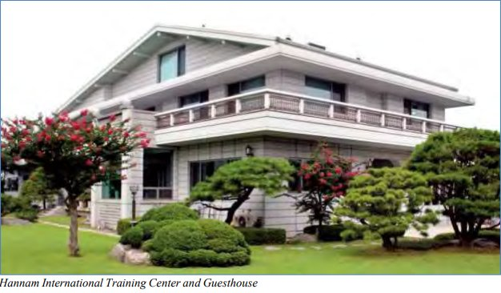
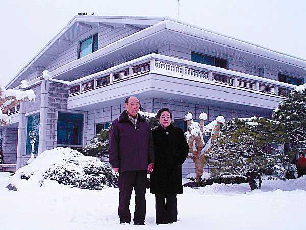

1983
1983 1 jan. Årets motto är "Hemkyrkan är platsen vi skall leva på".
Den 31 december 1976, höjde Sanna Föräldrar sin fana för deras första tidning i USA när de etablerade dagstidningen The News World. Den 4 april 1983, dåptes den om till New York Tribune.
. International Religious Foundation IRF grundas.
August 29, 1983



Sanna föräldrar flyttar in i Hannam-dong huset Seoul.
(bor där 1983-2006)
1983 lanserade Sanna Föräldrar AULA (the Association for the Unity of Latin America).
dec. Han och Hans hustru åker till Korea för att delta i VOC-rally.
I Kwangju planerar 72 personer att döda honom.
Han varnas från den andliga världen.
. The Middle East Times startas.
. SAEILO maskiner grundas.
. Master Marine grundas.
. Wacom elektronik, Japan grundas.
18 dec. 72 professorer ger löfte inför S.F. att kämpa mot kommunismen.
22 dec. Hans son Heung-Jin Nim (14 år) skadas dödligt i en bilolycka utanför New York.
Världen: 
Oleg Gordievsky var en rysk dubbelagent, tillhandahöll information till den brittiska underrättelsetjänsten
(MI6 & delvis CIA) från 1974 till 1985.
Två av Gordievskijs viktigaste bidrag var att avvärja en potentiell kärnvapenkonfrontation med
Sovjetunionen, när sovjeterna misstolkade NATO-övningen Able Archer 83 som ett potentiellt första anfall,
och identifierade Mikhail Gorbatjov som den Sovjetiska arvtagaren långt innan han blev framtrödande.
Faktum är att informationen som Gordievskij lämnade blev det första beviset på hur orolig den sovjetiska
ledningen hade blivit över möjligheten av ett Natos första kärnvapenanfall.
Läs boken Spion och förrödare av Ben MAcintyre.
/Wiki